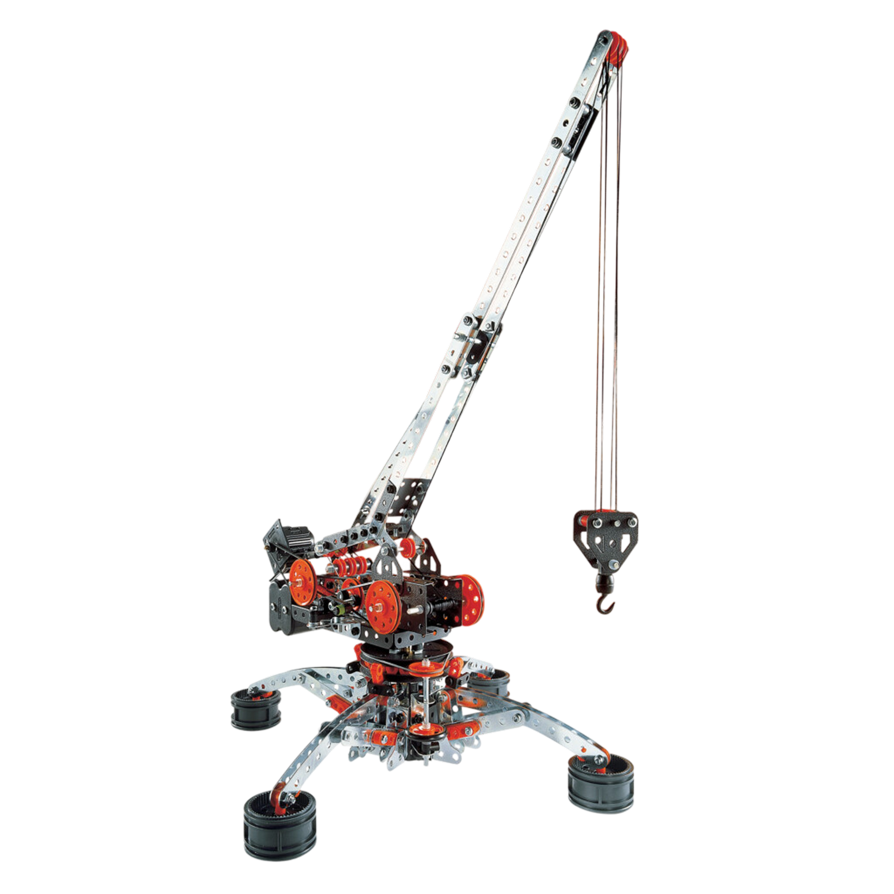
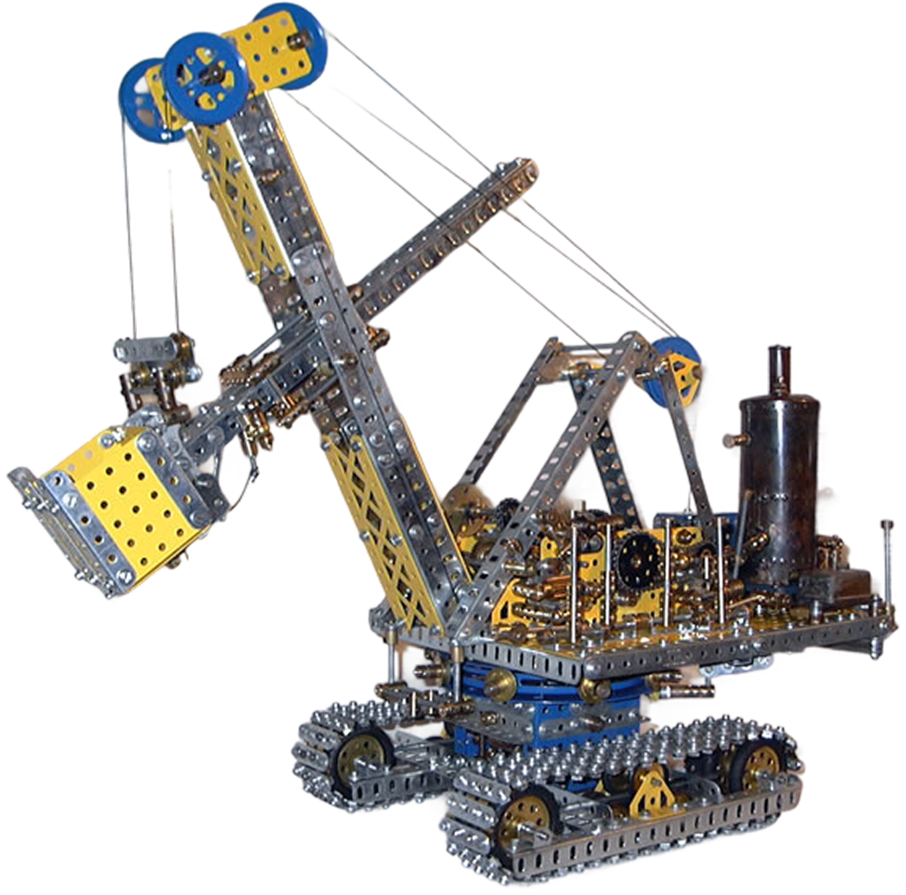

1900-1945 - L'ERA DEI GRANDI MITI
IL MECCANO
Nato dall'intuizione di un impiegato inglese di Liverpool, Frank Hornby, il Meccano ha trasformato generazioni di bambini in piccoli ingegneri. Brevettato nel 1901 con il nome di "Mechanics Made Easy", divenne ufficialmente "Meccano" nel 1907, diventando rapidamente il gioco di costruzioni più famoso del mondo.
L'INGEGNERIA A MISURA DI BIMBO
La genialità del Meccano stava nella sua semplicità modulare. Il sistema si basava su pochi elementi fondamentali:
- Strisce di metallo perforate: Rigide e resistenti, permettevano di creare scheletri solidi per qualsiasi struttura.
- Viti e bulloni: A differenza dei giochi a incastro, il Meccano richiedeva l'uso di veri strumenti (chiavi e cacciaviti), insegnando la manualità fine.
- Elementi meccanici: Pulegge, ingranaggi, ruote e persino motori a molla (e più tardi elettrici) permettevano alle creazioni di muoversi davvero.



I GIOCATTOLI HORNBY
- Versatilità infinita: Con la stessa scatola si poteva costruire una gru, poi smontarla e creare un ponte, un’automobile o un mulino a vento.
- Progressione: Il sistema era diviso in set numerati; acquistando i "set di completamento", il bambino poteva espandere la propria officina casalinga all'infinito.
- Realismo: Durante le due Guerre Mondiali, il Meccano fu usato persino per progettare prototipi reali e per addestrare i giovani alla meccanica applicata.

UN'ICONA DI METALLO
Mentre altri giochi dell'epoca erano fatti di legno o latta leggera, il Meccano trasmetteva una sensazione di potenza e durabilità. Era il giocattolo della Rivoluzione Industriale che entrava nelle camerette, riflettendo un mondo che credeva fermamente nel progresso tecnico.